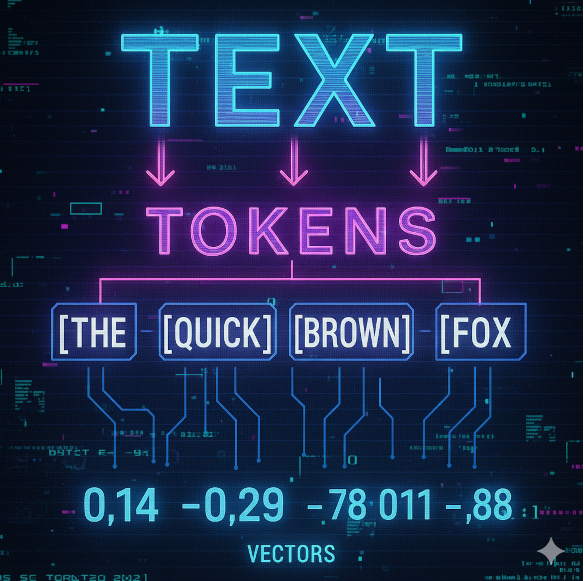

What we’ll learn
- Neurons: weight, bias, activation function.
- Vectorization: turning text into numeric features.
- Why training is hard: too many parameters to tune.
- Backprop (classic): iterative updates in loops.
- ELM (shortcut): random hidden layer + one-shot solve.
- Prediction: run the trained model on a sample.
We’ll keep it JavaScript-friendly: sliders, canvases, and small code snippets.
Roadmap
- Intro
- Neuron demo
- Text → vector
- Backprop loops
- Huang’s question
- Random grid intuition
- GPS/pseudoinverse
- Why randomness helps
- Random hidden & project
- ELM one-shot training
- Backprop vs ELM
- Prediction
Neural Networks: Big Picture
From text to prediction
- Text → vectors: tokenize + encode into numbers
- Input layer: pass the vector in
- Hidden layer: mix & squish (activation)
- Output layer: transformed signal → classes/scores
Plain English
Think of the hidden layer like a blender: it stirs the numbers with fixed recipes (weights), then a squish (activation) gives shape to the signal. The output just reads the mixture.
Neuron demo
Adjust w and b, choose an activation, and watch y = g(w·x + b).
z = w·x + b, then apply g(z).Try
- Set w = -2, b = 0.5
- Toggle ReLU ↔︎ tanh and observe shape changes
// y = g(w·x + b)
const z = w * x + b;
const y = activation(z);
- A neuron takes inputs, multiplies by weights, adds bias.
- The sum passes through an activation function.
- Weights and bias are the parameters that control output.
Vectorization (text → numbers)
Select a row and choose how you want to encode it. We’ll convert the text into a numeric feature vector and draw a mini heatmap of those features.
Plain English
Vectorization turns unstructured text into a fixed‑length numeric vector so a neural net can process it.
Bag‑of‑Words: each word becomes a feature and the value is its count; this simple tally ignores word order and context:contentReference[oaicite:0]{index=0}.
TF‑IDF: weighs word frequency by inverse document frequency so common words are down‑weighted; it emphasises rare yet distinctive words:contentReference[oaicite:1]{index=1}.
ELM flexibility: ELM only needs a numeric vector, so you can use any reasonable encoder (BoW, TF‑IDF or even embeddings). The hidden layer’s random projection works the same no matter which features you choose.
Why manual tuning doesn’t scale
Real networks have many parameters—impossible to tweak by hand.
Backpropagation automates tuning in loops: measure error → nudge weights → repeat.
What to look for
- Left heatmap: hidden weights changing
- Right chart: loss trending down
- LR too high → noisy; too low → sluggish
- Backprop = “guess → measure error → nudge weights → repeat.”
- Learning rate: too low = slow; too high = overshoot/noisy.
- Why it’s time-consuming: we do this across millions of weights and many epochs until the loss curve settles.
Then along comes Guang-Bin Huang
What if we didn’t train the hidden layers at all?
To many engineers, that sounds like shipping production code without unit tests. Hidden layers are where the magic happens—so why skip training them?
The insight
Randomize the hidden layer once (weights & biases), then never touch it.
Focus all effort on solving the output layer in one step with the Moore–Penrose pseudoinverse.
Minutes or hours of loops → seconds.
The city from above
From a skyscraper, the city looks messy—twisting streets, odd angles. Hard to give directions.
Drop a random grid on top. It won’t match perfectly, but now you can say: “Café at row 3, col 5.” The grid isn’t smart—but it’s a reference system.
ELM mapping
The hidden layer is that grid: it projects messy, high-dimensional data into random coordinates.
H = g(X·W + b)
Once you have coordinates, organization gets simpler.
Output layer as GPS
With coordinates in hand, navigation is easy: straight lines in grid space. The output layer is the GPS: map random coordinates to labels in one exact step.
The math idea
Use the Moore–Penrose pseudoinverse to solve Hβ ≈ Y.
Think of it like Array.prototype.reduce() for optimization: push inputs & labels through, get the best output weights β.
No gradient descent loops. One solve.
Why randomness helps
Raw input space is often not linearly separable. Random projection to a higher-dimensional space can make separation easier—like unfolding a crumpled paper ball onto a plane.
ELM recipe
- Project inputs with a randomized hidden layer to get
H. - Solve a linear model once for
βsoHβ ≈ Y.
Surprisingly strong with enough hidden units + sensible ridge.
Hidden layer (Random & Project)
Random projection: H = g(X·W + b). Reseed the hidden layer; project the currently encoded row.
What you’re seeing
Heatmap: rows = hidden neurons; cols = input features; color = sign & magnitude of W[i,j]. Bars on right show H = g(Wx + b) for the selected text.
Tip: encode on the previous slide, then project.
ELM: random hidden + one-shot solve
We solve Hβ ≈ Y once (pseudoinverse / ridge). No loops.
Plain English
Random hidden features give coordinates. We draw a straight separator there. Done.
The shortcut: one solve vs many backprop loops.
Backprop
Like sculpting a custom key for a lock: chip, test, adjust—many iterations until it fits.
ELM
Like trying a keyring of random keys (random hidden features). One fits; keep it by solving the output weights once.
Prediction demo
Pick a row and run the trained model.
Reading the result
Predicted label, ground truth, and per-class probabilities.
If the truth exists in the sample, we’ll mark ✓ or ✗.